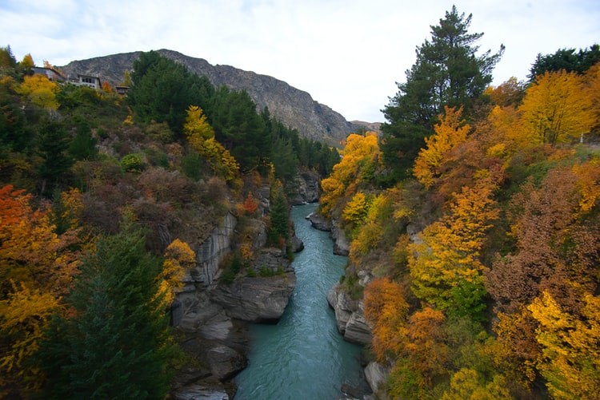

Language
New Zealand is predominantly an English-speaking country, though English, Maori, and New Zealand Sign Language are official languages. Virtually all Maori speak English, and about one-fourth of them also speak Maori. The Maori language is taught at a number of schools. Other non-English languages spoken by significant numbers of people are Samoan, Hindi, and Mandarin Chinese.Religion
New Zealand is nominally Christian, with Roman Catholic, Anglican, and Presbyterian denominations being the largest. Other Protestant sects and Maori adaptations of Christianity (the Ratana and Ringatu churches) account for nearly all of the rest, although more than one-third of the population does not claim any religious affiliation. Hinduism, Buddhism, and Sikhism have small but growing numbers of adherents. There is no established (official) religion, but Anglican cathedrals are generally used for state occasions.Animals
In the absence of predatory animals, New Zealand is a paradise for birds, the most interesting of which are flightless. These originally included several species of moa, a large bird that was eventually exterminated by the Maori. The kiwi, another flightless species, is extant, though only in secluded bush areas. Wekas and takahes (barely rescued from extinction) probably became flightless after their ancestors’ arrival on the islands millions of years ago. The pukeko, a swamp hen related to the weka, moves primarily by walking and swimming; though it can fly, it does so only with great effort. Some birds, such as saddlebacks, are peculiar to New Zealand, but many others (e.g., tuis, fantails, and bellbirds) are closely related to Australian birds. Birds that breed in or near New Zealand include the Australian (Australasian) gannets, skuas, penguins, shags, and royal albatrosses. Because New Zealand lies at the meeting place of warm and cool ocean currents, a great variety of fish is found in its surrounding waters. Tropical species such as tuna, marlin, and some sharks are attracted by the warm currents, which are locally populated by snapper, trevally, and kahawai. The Antarctic cold currents, on the other hand, bring blue and red cod and hakes, while some fish (such as tarakihi, grouper, and bass) that can tolerate a considerable range of water temperatures are found in the waters all around the coasts. Flounder and sole abound on tidal mudflats, and crayfish are prolific in rocky areas off the coastline.
Seasons in new Zealand
From crisp spring days to long golden starlit summer evenings and cold winter nights, New Zealand has something unique to offer every season. The seasons in new Zealand officially began at the start of their spefific months.Spring: September-November
In the spring life in New Zealand starts anew with colorful blooms, fresh spring rain and comfortable tempatures, giving it the perfect time to visit the coutry and spot waterfalls, visit world-class vineyards in Hawke's Bay, or cycle one of the many great trails.Tempatures range from 40-65f, or 4.5-18 degrees celsius.
Summer: December-February
Activities in the summer tend to spend most of the time outside in the sun, sea and sand. New Zealands beautiful beaches and forest bordered lakes make them perfect places to cool off in these summer months.Tempatures range from 70-90F, or 21-32 degrees celsius.
Autumn: March-May
Autumn New Zealand is the most neutral and relaxing time of the year where activities are still comfortable outdoors, soaking up the sun and beautiful view of golden leaves with splashes of all colors. Also enjoying activities such as hiking, cycling, camping, boating or Kayaking.Tempatures range from 50-75F, or 7-21 degrees celsius.
Winter: June-August
The winter will bring snow to the mountian peaks around the country, and clear but chilly days. In the Northern islands of New Zealand you will encounter more rain, while in the South island is colder but a drier chill. Despite the cold weather there is alot of activities such as ski slopes, skating and multiple winter festivities outdoor and indoors.Tempatures range from 35-60F, or 1.5-15.5S degrees celsius.


Temperature Converter
Type a value in the Celsius field to convert the value to Fahrenheit:
Fahrenheit:
Holidays
Wellington Anniversary Day
Northland Anniversary Day
Auckland Anniversary Day
Nelson Anniversary Day
Taranaki Anniversary Day
Otago Anniversary Day
Southland Anniversary Day
South Canterbury Anniversary Day
Hawke's Bay Anniversary Day
Marlborough Anniversary Day
Canterbury Anniversary Day
Chatham Islands Anniversary Day
Westland Anniversary Day
Waitangi day, a haka performed during the welcome of a political delegation